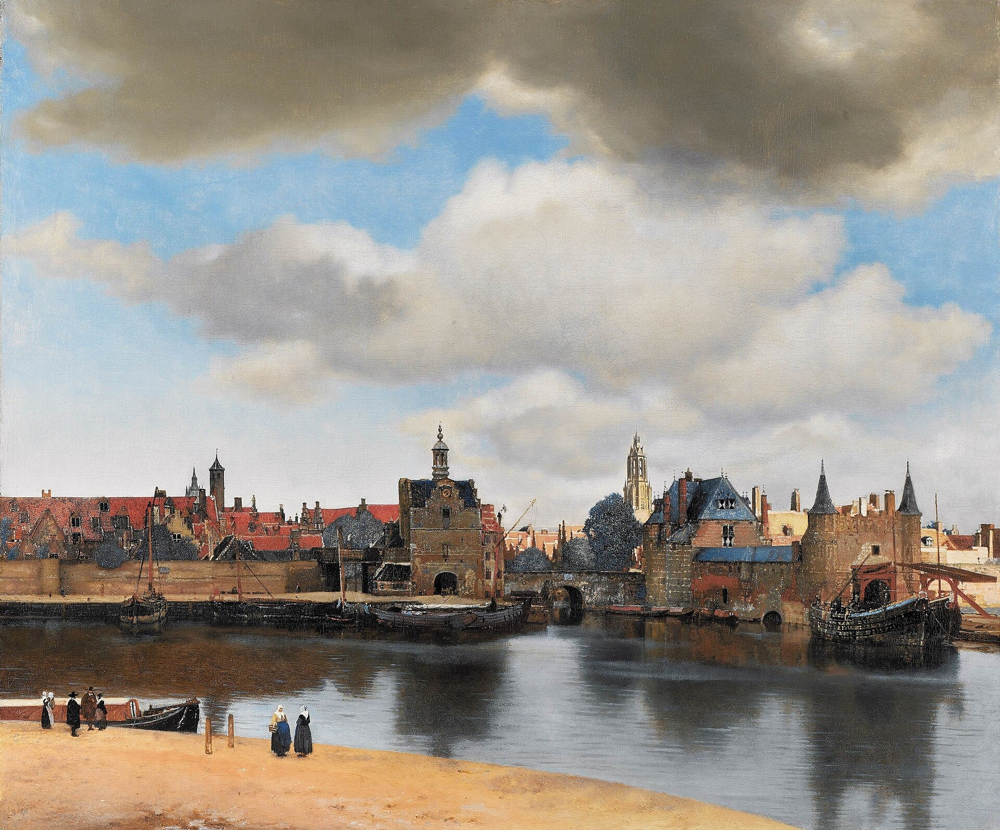

代尔夫特一景 View of Delft
维米尔 · 约1660–1661年 · 海牙莫瑞泰斯皇家美术馆
Johannes Vermeer · c. 1660–1661 · Mauritshuis, The Hague
图片：Wikimedia Commons，公有领域 / Image: Wikimedia Commons, public domain

发现 · Discover
两座城门 The two gates
对岸右边是斯希丹门和鹿特丹门。
On the far bank, to the right, are the Schiedam and Rotterdam Gates.
新教堂 The New Church
两座城门之间升起的，是新教堂的塔楼。这是代尔夫特最重要的建筑，里面有“国父”奥兰治亲王威廉的墓。
Between the gates rises the tower of the New Church, the most important building in Delft, which holds the tomb of William of Orange, Father of the Fatherland.
阳光里的塔 The sunlit tower
阳光照得最亮的地方，维米尔用一层厚而平滑的黄色颜料，像雕塑一样塑造，让塔楼在阳光下闪闪发光。
Where the sunlight is brightest, Vermeer applied a thick, smooth layer of yellow paint, almost modelling it, so that the tower seems to shimmer.
新的钟 New bells
就在维米尔画这幅画的时候，1660年到1661年，铸钟匠正在为这座塔挂上新钟。
While Vermeer was painting this view, in 1660–61, a bell founder was hanging new bells in this very tower.
云 The clouds
城市上空飘着大片的云，光好像是从云里发出来的。
Great clouds float above the town, and the light seems to radiate from them.
调整过的现实 Reality, adjusted
为了让画面平衡、宁静，维米尔对真实的景色做了一点调整。和当时的地形图对比，就能看出来。
To make the picture balanced and calm, Vermeer adjusted reality a little. You can see this by comparing it with topographical drawings of the spot.
世界上最美的画 The most beautiful painting
法国作家普鲁斯特称它为“世界上最美的画”。他至少看过它两次：1902年在海牙，1921年在巴黎。
The French writer Marcel Proust called it "the most beautiful painting in the world". He saw it at least twice: in The Hague in 1902, and in Paris in 1921.
故事 · The story
ACT I 第一幕 · 河对岸的城市 A town across the water
大约1660年，维米尔站在河的这一边，画下了对岸的家乡代尔夫特：城墙、城门，和阳光下的新教堂。这是17世纪荷兰最著名的城市风景画。
Around 1660, Vermeer looked across the water and painted his home town of Delft: its walls, its gates, and the New Church in sunlight. It is the most celebrated cityscape of 17th-century Dutch art.
约1660–1661年 · 海牙莫瑞泰斯皇家美术馆 / c. 1660–1661 · Mauritshuis, The Hague
ACT II 第二幕 · 一小块黄色的墙 A little patch of yellow wall
普鲁斯特非常喜爱这幅画。1921年，巴黎的荷兰绘画展特意借来了它，让病中的普鲁斯特能再看一眼。在他的小说里，一位作家在这幅画前，寻找一小块画得极其精致的黄色墙面。
Proust loved this painting. In 1921, an exhibition of Dutch art in Paris included it so that the ailing writer could see it once more. In his novel, a writer stands before this painting, searching for an exquisitely painted little patch of yellow wall.
约1660–1661年 · 海牙莫瑞泰斯皇家美术馆 / c. 1660–1661 · Mauritshuis, The Hague
ACT III 第三幕 · 回到海牙 In The Hague
1822年，莫瑞泰斯买下了这幅画。今天，它挂在莫瑞泰斯的15号展厅。
In 1822, the Mauritshuis bought the painting. Today it hangs in Room 15.
约1660–1661年 · 海牙莫瑞泰斯皇家美术馆 / c. 1660–1661 · Mauritshuis, The Hague
世界上最美的画。 The most beautiful painting in the world.
作品档案 · Artwork record
| 画家（生卒年） · Artist (dates) | 约翰内斯·维米尔（1632–1675） / Johannes Vermeer (1632–1675) |
|---|---|
| 画名 · Title | 代尔夫特一景 / View of Delft |
| 年份 · Date | 约1660–1661年 / c. 1660–1661 |
| 材质 · Medium | 布面油画 / Oil on canvas |
| 尺寸 · Dimensions | 96.5 × 115.7 cm |
| 收藏地 · Collection | 海牙莫瑞泰斯皇家美术馆，15号展厅（1822年购入） / Mauritshuis, The Hague, Room 15 (purchased 1822) |
关于画家 · About the artist
约翰内斯·维米尔（1632–1675），荷兰画家，一生都在代尔夫特生活和创作。他留下的画作只有约35幅，以描绘室内的光线著称。
Johannes Vermeer (1632–1675) was a Dutch painter who lived and worked in Delft all his life. Only about 35 of his paintings survive, famous for their rendering of light in quiet interiors.
更多维米尔的画 · More by Johannes Vermeer